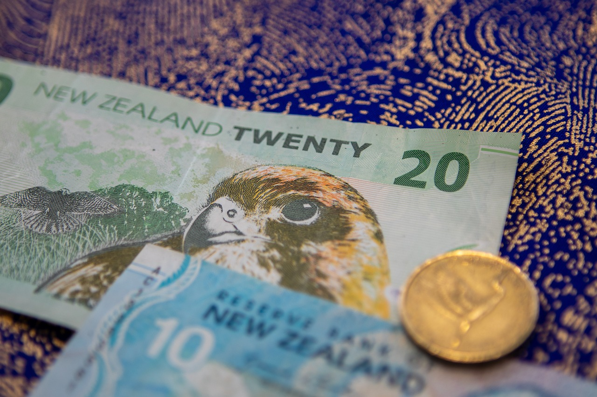
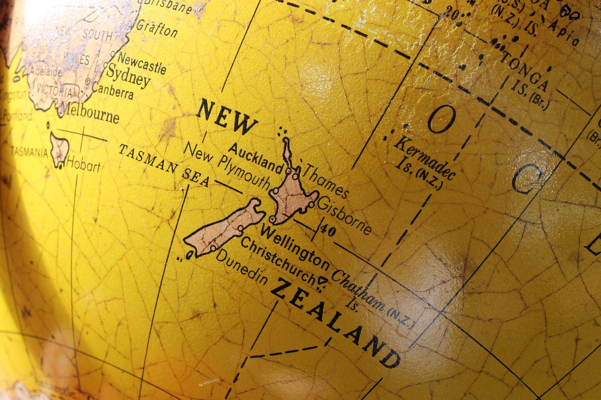
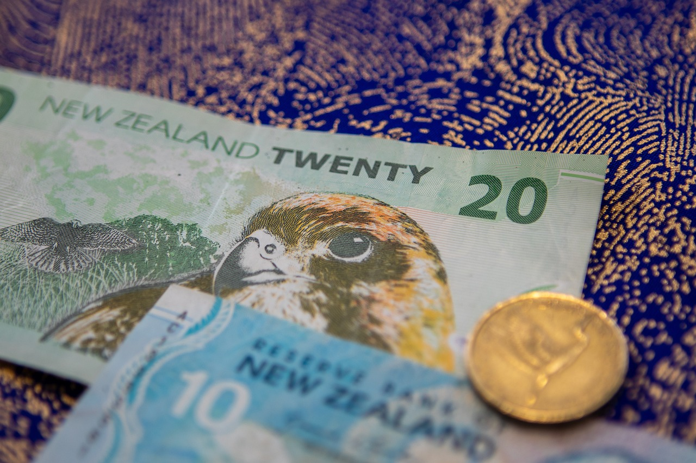
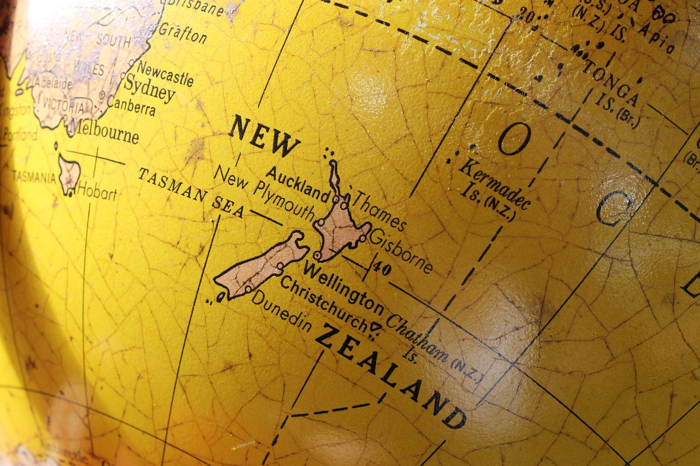

Welcome to New Zealand
Some Facts
- 1 NZ $ = 49.4 IND Rs.
- 06:30 hr difference from IST
- Two official languages are English and Mouri (Tribal language)
- It feels like travelling in Denmark, Sweden, Norway and Finland
- Population of sheep is greater than population of humans
- There is no any toll-tax of road
- Some expensive things are SIM card, Internet, Public Transport, Petrol, Food, Accomodation and any type of criminal fine
Tourist Places
 


